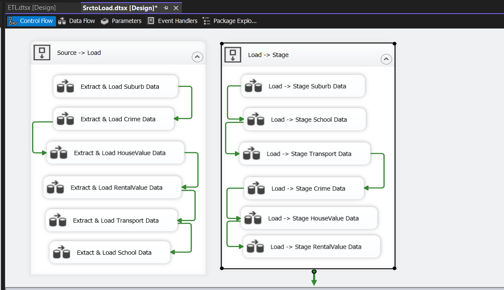

Property Analysis: Data Warehousing & ETL Implementation || SSIS, SQL Server, Visual Studio
🎯 Objective
To design and implement a scalable ETL pipeline and dimensional data warehouse that supports
location, property, rental, crime, and school data integration using best practices in data
engineering and modeling.

End-to-End SSIS
ETL Pipeline from
raw source to Star schema.
🧠 Project Overview
Developed a complete SSIS-based ETL solution to extract, transform, and load
multi-source datasets into a
Star Schema data warehouse, enabling structured, analytics-ready storage of property and
public service
data.
Tools Used: SQL Server | SSIS | Visual Studio
Techniques: ETL, Star Schema, Factless Fact Tables, Degenerate
Dimensions, Data
Warehousing
🔧 What I Did
Extracted data from multiple Excel files into load_* and stage_* tables using SSIS.
Applied business transformations with Derived Columns, Conditional Splits, and
Lookups.
Modeled a Star Schema with fact and factless fact tables.
Composite primary key creation at staging level (State_code + Suburb) for
uniqueness.
Defined degenerate dimensions for fields like RentalHouseType, Offence Category,
Offence Sub-Category,
and derived value categories.
Final cleaned data was loaded into Dim_* and Fact_* tables structured in a Star
schema.